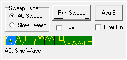

|  |
Sweep Type
selects either continuous AC Sweeps or a single Slow Sweep. The AC
Sweep runs continuously at 60Hz but data is only collected when the Run
Sweep button is clicked. The Slow Sweep runs once when Run Sweep is
clicked. The slow sweep values are entered in the Slow Sweep Area. Run Sweep initiates acquisition of a trace by sending the SWP command to Mini_CT. Received data is calibrated, saved and plotted. Live starts a background timer that runs at the Rate setting. The timer initiates a Run Sweep at each timer interval. Avg 8 runs eight sweeps and averages the values. Use this to lower noise. Filter On enables a running averaging filter that is applied to the incoming data. The filter is a three point average of adjacent data points. AC Waveforms are selected by clicking on the desired waveform type. The selected type is highlighted in blue and the text is shown below the selection image. When waveform is clicked, the WAV command is sent to Mini_CT. Main |